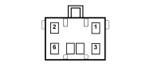

D189 DASHBOARD/LPG JUNCTION (FRONT)
- Path
- Electrical equipment > 3 CONNECTORS > D INTERMEDIATE COUPLINGS > D189 DASHBOARD/LPG JUNCTION > D189 DASHBOARD/LPG JUNCTION (FRONT)
- Kind
- connector pinout (pin -> wire colour -> other end)
- Applies to
- engines: 2.0 16V; all production periods; only with equipment: GPL
- Interactive page
- https://sloeber94.github.io/elrnDB-fDct/en/#/244002955
Applies to: engines: 2.0 16V; all production periods; only with equipment: GPL

Wiring | Colour |
|---|---|
NERO (black) |
Pin | Cable | Destination | |||
|---|---|---|---|---|---|
Sec.. | Colour | Node | Connect. | Pin | |
1 | 0,5 | V (green) | 60 | ||
2 | 0,5 | M (brown) | 47 | ||
3 | 0,5 | RN (red with black stripe) | X | 2 | |
16 | |||||
4 | 0,5 | H (grey) | 10 | ||
5 | 0,5 | S (pink) | 15 | ||
6 | 0,5 | G (yellow) | X | 1 | |
C5 | |||||
22 | |||||